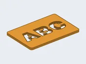
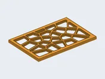
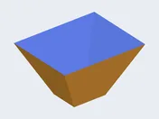

Crear pieza
Genera piezas a medida sin dibujarlas: formas básicas, desarrollos de chapa (T, curvas, conos, transiciones, helicoide), letras para cartel y paneles calados. A la izquierda elegís la figura, en el medio cargás las medidas y a la derecha ves el resultado al instante.
Los diámetros y secciones de los desarrollos son exteriores; el desarrollo se calcula sobre el espesor neutro de la chapa.
Campos de todas las figuras
- Nombre de la pieza
- Nombre con el que aparece en la lista de piezas y en los archivos. Se completa solo con la figura y sus medidas; si lo cambiás a mano, se respeta.
- Espesor de chapa (mm)
- Espesor con el que se calcula el desarrollo. Por defecto, el del material elegido en la ventana principal.
- Cantidad de conjuntos
- Cuántas veces hacés la pieza completa. Si la figura tiene varias partes, cada conjunto las lleva todas.
- Muescas en V en los pliegues (mm)
- Solo en figuras con pliegues: una pequeña V en el borde, en cada línea de plegado, para ubicar el pliegue. El número es el tamaño de la V.
- Agregar al nesting
- Manda la pieza (todas sus partes) a la lista de la ventana principal. En la DEMO, solo con las formas básicas y la curva por sectores.
- Exportar DXF…
- Guarda las partes en DXF sin pasar por el nesting; opcional, el plano PDF con marcas y pliegues. En las letras sin marco es la única salida. En la DEMO, solo con las figuras que la DEMO permite.
- Actualizar pieza
- Aparece al editar con ✎: reemplaza la pieza de la lista por la nueva.
Letras y carteles

Letras para cartel PRO
Texto para calar en chapa, con puentes en las islas (O, A, B, D, P, R, 0…) para que no se caigan. Sin marco: das el ancho total y sale en DXF para armar el cartel en el CAD. Con marco: el cartel entero (chapa, 1 o 2 líneas y agujeros), listo para el nesting.
Marco
- Forma
- Ninguno = solo las letras, sueltas, en DXF (el cartel lo armás en el CAD). Con una forma = la chapa del cartel entera, con las letras caladas, lista para el nesting.Ninguno · Rectángulo · Esquinas invertidas · Esquinas en chaflán · Arco arriba · Ticket · Hexágono alargado · Escudo · Círculo · Óvalo
- Ancho mm
- Ancho total del cartel (en el círculo, el diámetro).
- Alto mm
- Alto total del cartel.
- Margen hasta las letras mm
- Distancia mínima entre el borde del cartel y las letras.
- Tamaño del detalle (0 = automático) mm
- Depende de la forma: rectángulo = radio de las esquinas (0 = vivas); esquinas invertidas o en chaflán = tamaño de la esquina; arco arriba = alto del arco; ticket = cuánto entran los lados curvos; hexágono = largo de las puntas; escudo = alto de la parte curva. Salvo en el rectángulo, 0 = un tamaño automático.
- Agujeros de fijación
- Ninguno, 2 arriba (para colgar) o 4 (uno cerca de cada esquina).
- Diámetro de los agujeros mm
- Diámetro de los agujeros de fijación.
- Distancia del agujero al borde mm
- Del centro del agujero al borde del cartel.
Texto / Línea 1
- Texto
- Lo que se escribe. Sin marco va una sola línea: para más, generá cada línea por separado. Con marco, esta es la línea de arriba.
- Fuente
- Tipo de letra (6 incluidas, gratuitas para uso comercial).Anton · Bebas Neue · Archivo Black · Montserrat ExtraBold · Alfa Slab One · Pacifico
- Ancho total del texto mm
- Sin marco: ancho total que tiene que medir el texto; el programa busca el alto de letra que da ese ancho (lo muestra en la línea de datos).
- Tamaño %
- Con marco: tamaño de la línea 1. 100 % = lo más grande que entra en el cartel; al lado se ve el alto en mm.
- Espaciado entre letras %
- Aire extra entre letras, en % del cuerpo de la letra. 0 = el de la fuente; negativo = más juntas.
Línea 2
- Texto (opcional)
- Segunda línea, debajo de la primera (solo con marco). Vacío = una sola línea.
- Fuente
- Tipo de letra de la línea 2 (puede ser otra que la de la línea 1).Anton · Bebas Neue · Archivo Black · Montserrat ExtraBold · Alfa Slab One · Pacifico
- Tamaño %
- Tamaño de la línea 2, como el de la línea 1. Si las dos no entran juntas, el cartel se marca en rojo.
Puentes
- Ancho del puente (0 = automático) mm
- Ancho de las uniones que sostienen las islas (el centro de la O, la A, la B…) para que no se caigan. 0 = automático: 1,5 × espesor, mínimo 3 mm.
- Puentes por isla
- Automático = 2 puentes (arriba y abajo) en las islas grandes y 1 en las chicas. O fijo 1 o 2.
Fondo
- Fondo
- Con marco: liso (chapa entera) o calado con un patrón decorativo, como los paneles calados.
- Borde liso alrededor del texto mm
- Franja lisa, sin calar, alrededor de cada línea de texto, para que las letras se lean. Entre la línea 1 y la 2 queda todo liso.
- Patrón
- Orgánico = celdas irregulares tipo panal natural; geométrico = figuras iguales en grilla.
- Tamaño de celda mm
- Distancia media entre centros de huecos vecinos (hueco + nervio). Más chica = más huecos.
- Irregularidad %
- 0 % = celdas casi iguales (panal); 50 % = naturales; 100 % = más mezcla de tamaños y formas.
- Radio de las esquinas del hueco mm
- Redondeo de las esquinas de cada hueco. 0 = esquinas vivas.
- Variante
- Cambia el sorteo del patrón orgánico. El mismo número da siempre el mismo dibujo.
- Figura
- Forma de cada hueco del patrón geométrico.Círculo · Hexágono · Cuadrado · Rombo
- Grilla
- Tresbolillo = filas corridas medio paso (más denso); recta = filas y columnas alineadas.
- Paso mm
- Distancia entre centros de figuras vecinas.
- Tamaño de la figura % del paso
- Tamaño de cada figura en % del paso. Si dejaría menos nervio que el mínimo, se achica sola (y avisa).
- Giro °
- Gira cada figura sobre su centro (no se aplica al círculo).
- Nervio entre huecos (0 = automático) mm
- Ancho mínimo de chapa entre dos huecos, para que la plasma no lo corte ni lo deforme. 0 = automático: 2 × espesor, mínimo 5 mm. Por debajo, se usa igual pero avisa.
- Hueco mínimo (0 = automático) mm
- Los huecos más chicos que esto se sacan (Ø del círculo que entra en el hueco). 0 = automático: 5 × espesor, mínimo 6 mm.
Paneles calados

Panel calado PRO
Chapa con huecos decorativos (celosías, frentes, separadores): patrón orgánico (Voronoi) o geométrico, con degradé, dentro de cualquiera de los 9 marcos. Una pieza para el nesting.
Marco
- Forma
- Forma exterior de la chapa.Rectángulo · Esquinas invertidas · Esquinas en chaflán · Arco arriba · Ticket · Hexágono alargado · Escudo · Círculo · Óvalo
- Ancho mm
- Ancho total del panel (en el círculo, el diámetro).
- Alto mm
- Alto total del panel.
- Margen sin calar mm
- Franja lisa, sin huecos, entre el borde del panel y el calado.
- Tamaño del detalle (0 = automático) mm
- Depende de la forma: rectángulo = radio de las esquinas (0 = vivas); esquinas invertidas o en chaflán = tamaño de la esquina; arco arriba = alto del arco; ticket = cuánto entran los lados curvos; hexágono = largo de las puntas; escudo = alto de la parte curva. Salvo en el rectángulo, 0 = un tamaño automático.
- Agujeros de fijación
- Ninguno, 2 arriba (para colgar) o 4 (uno cerca de cada esquina).
- Diámetro de los agujeros mm
- Diámetro de los agujeros de fijación.
- Distancia del agujero al borde mm
- Del centro del agujero al borde del panel.
Patrón
- Patrón
- Orgánico = celdas irregulares tipo panal natural (Voronoi); geométrico = figuras iguales en grilla.
- Tamaño de celda mm
- Distancia media entre centros de huecos vecinos (hueco + nervio). Más chica = más huecos.
- Irregularidad %
- 0 % = celdas casi iguales (panal); 50 % = naturales; 100 % = más mezcla de tamaños y formas.
- Radio de las esquinas del hueco mm
- Redondeo de las esquinas de cada hueco. 0 = esquinas vivas.
- Figura
- Forma de cada hueco del patrón geométrico.Círculo · Hexágono · Cuadrado · Rombo
- Grilla
- Tresbolillo = filas corridas medio paso (más denso); recta = filas y columnas alineadas.
- Paso mm
- Distancia entre centros de figuras vecinas.
- Tamaño de la figura % del paso
- Tamaño de cada figura en % del paso. Si dejaría menos nervio que el mínimo, se achica sola (y avisa).
- Giro °
- Gira cada figura sobre su centro (no se aplica al círculo).
- Variante
- Cambia el sorteo del patrón orgánico. El mismo número da siempre el mismo panel.
Degradé
- Degradé
- Hace variar el tamaño a lo largo del panel: horizontal (de izquierda a derecha), vertical (de abajo hacia arriba) o desde el centro hacia las esquinas. Uniforme = todo igual.
- Tamaño al comienzo %
- Tamaño al comienzo del degradé, en % (de la celda en el orgánico, de la figura en el geométrico). 100 % = el tamaño elegido arriba.
- Tamaño al final %
- Tamaño al final del degradé, en %. Más chico que el comienzo = los huecos se achican hacia el final.
Corte
- Nervio entre huecos (0 = automático) mm
- Ancho mínimo de chapa entre dos huecos, para que la plasma no lo corte ni lo deforme. 0 = automático: 2 × espesor, mínimo 5 mm. Por debajo, se usa igual pero avisa.
- Hueco mínimo (0 = automático) mm
- Los huecos más chicos que esto se sacan (Ø del círculo que entra en el hueco). 0 = automático: 5 × espesor, mínimo 6 mm.
Formas básicas

Rectángulo DEMO
Chapa rectangular con esquinas redondeadas y agujeros en las esquinas opcionales.
- Ancho mm
- Medida horizontal de la chapa.
- Alto mm
- Medida vertical de la chapa.
- Radio de esquinas (0 = rectas) mm
- Redondea las cuatro esquinas con ese radio. 0 = esquinas vivas.
- Ø agujeros en esquinas (0 = sin) mm
- Diámetro de un agujero en cada esquina (para fijar la chapa). 0 = sin agujeros.
- Distancia del centro del agujero al borde mm
- Desde el centro de cada agujero hasta los dos bordes de la chapa que tiene al lado.

Disco / arandela DEMO
Disco macizo o arandela (corona circular).
- Ø exterior mm
- Diámetro del borde de afuera.
- Ø interior (0 = disco macizo) mm
- Diámetro del agujero central. 0 = disco macizo; mayor que 0 = arandela.
Brida DEMO
Brida circular con agujeros equidistantes sobre un círculo de pernos.
- Ø exterior mm
- Diámetro exterior de la brida.
- Ø interior (0 = ciega) mm
- Diámetro del agujero central (el del caño). 0 = brida ciega, sin agujero central.
- Ø círculo de pernos mm
- Diámetro del círculo donde van los centros de los agujeros de los bulones.
- Cantidad de agujeros
- Cuántos agujeros para bulones, repartidos a la misma distancia sobre el círculo de pernos.
- Ø agujeros mm
- Diámetro de cada agujero para bulón.
- Giro del primer agujero °
- Ángulo del primer agujero, medido desde la derecha (eje horizontal) en sentido antihorario. Con 8 agujeros, 22,5° los deja a los costados de los ejes en lugar de encima.
Desarrollos

T cilindro / cilindro PRO
Injerto de un caño (ramal) sobre otro (principal), a cualquier ángulo y con excentricidad. Genera el desarrollo del ramal y, opcional, la chapa del principal con el agujero.
- Ø exterior principal mm
- Diámetro exterior del caño principal (el que recibe al otro).
- Ø exterior ramal mm
- Diámetro exterior del ramal (el caño que se injerta). Puede ser igual o menor que el principal.
- Ángulo ramal / principal °
- Ángulo entre los ejes de los dos caños. 90° = T a escuadra; menos de 90° = injerto inclinado.
- Excentricidad (desplazamiento lateral) mm
- Corre el eje del ramal hacia un costado del eje del principal. 0 = ejes que se cortan. Con desplazamiento, el ramal entra «de costado».
- Largo del ramal (desde eje principal) mm
- Medido sobre el eje del ramal, desde el eje del principal hasta la boca libre del ramal.
- Unión
- Apoyado: el ramal se apoya por fuera del principal (el corte toma el interior del ramal). Penetrante: el ramal entra en el principal hasta su pared interior.
- Posición de la costura °
- Dónde queda la soldadura del ramal, en grados alrededor de su eje: 0 = sobre la línea del eje del principal, 90 = al costado.
- Dividir el ramal en partes
- Corta el desarrollo en esa cantidad de chapas iguales, para que entre en la plancha o sea más fácil de rolar. Cada parte lleva su costura.
- Generar chapa del principal
- Sí = también sale la chapa del caño principal desarrollada, con el agujero ya cortado.No · Sí
- Largo chapa del principal mm
- Largo de la chapa del principal (en la dirección de su eje). El cruce de los ejes queda en el medio de la chapa.

T ramal rectangular sobre caño PRO
Ramal de sección rectangular apoyado sobre un caño redondo, a 90° y centrado. El ramal se arma con 4 chapas: 2 caras rectas (lado A) y 2 caras con el corte curvo (lado B, van entre las otras). Opcional: la chapa del caño con el agujero.
- Ø exterior principal mm
- Diámetro exterior del caño redondo sobre el que apoya el ramal.
- Ramal: lado paralelo al eje del caño (A) mm
- Lado del ramal paralelo al eje del caño. Las 2 caras A son rectas y van con el ancho completo.
- Ramal: lado transversal al caño (B) mm
- Lado del ramal que cruza el caño. Las 2 caras B llevan el corte curvo y van entre las caras A. Tiene que ser menor que el Ø del principal.
- Largo del ramal (desde eje principal) mm
- Desde el eje del caño hasta la boca libre del ramal.
- Generar chapa del principal
- Sí = también sale la chapa del caño desarrollada, con el agujero rectangular ya cortado.No · Sí
- Largo chapa del principal mm
- Largo de la chapa del principal (en la dirección de su eje). El agujero queda centrado.

T ramal redondo sobre caja PRO
Ramal de caño redondo sobre una cara plana (caja, tolva o conducto rectangular), a 90° o inclinado. Genera el desarrollo del ramal y, opcional, la chapa de la cara con el agujero (círculo o elipse).
- Ø exterior ramal mm
- Diámetro exterior del caño que se injerta sobre la cara plana.
- Ángulo ramal / cara °
- Ángulo entre el eje del ramal y la cara. 90° = perpendicular (agujero redondo); menos = inclinado (elipse).
- Largo del ramal (sobre su eje, desde la cara) mm
- Desde el punto donde el eje del ramal toca la cara hasta la boca libre.
- Posición de la costura °
- Dónde queda la soldadura del ramal, en grados alrededor de su eje: 0 = del lado del ángulo agudo.
- Dividir el ramal en partes
- Corta el desarrollo en esa cantidad de chapas iguales, para que entre en la plancha o sea más fácil de rolar. Cada parte lleva su costura.
- Generar chapa de la cara
- Sí = también sale la chapa de la cara con el agujero (círculo o elipse) ya cortado.No · Sí
- Chapa de la cara: largo (en la dirección de inclinación) mm
- Largo de esa chapa, en la dirección hacia donde se inclina el ramal. El agujero queda centrado.
- Chapa de la cara: ancho mm
- Ancho de esa chapa (la otra dirección).

Curva redonda por sectores DEMO
Codo de chapa en gajos: dos extremos (medio gajo) y gajos intermedios completos. Los gajos encastran entre sí girados 180°, el nesting lo aprovecha.
- Ø exterior mm
- Diámetro exterior del caño.
- Ángulo total de la curva °
- Cuánto gira la curva. 90° = codo en escuadra.
- Cantidad de piezas (gajos)
- Cantidad total de gajos, contando los dos extremos (que son medio gajo). Ej.: 5 = 2 extremos + 3 intermedios. Más gajos = curva más suave.
- Radio de curvatura (al eje) mm
- Radio de la curva medido hasta el eje del caño. Lo usual: 1 a 1,5 veces el diámetro.
- Tramo recto en cada extremo mm
- Tramo recto que se suma en la punta de cada extremo (para soldar o embridar). 0 = sin tramo recto.
- Costura
- Dónde queda la soldadura longitudinal del caño: garganta (lado interior de la curva), talón (lado exterior) o costado.
- Dividir cada gajo en partes
- Corta cada gajo en esa cantidad de chapas, si no entra en la plancha.

Curva rectangular PRO
Codo de conducto rectangular: 2 tapas laterales planas (sector de corona) y 2 bandas roladas (garganta y talón) que van entre las tapas. Medidas de sección exteriores.
- Sección: lado en el plano de la curva mm
- Lado de la sección en el plano de la curva: distancia entre garganta y talón, medida por fuera.
- Sección: lado perpendicular mm
- El otro lado de la sección: ancho entre las tapas laterales, medido por fuera.
- Radio interior (garganta, por fuera) mm
- Radio de la garganta (la banda de adentro), medido por fuera. 0 = garganta en esquina viva.
- Ángulo de la curva °
- Cuánto gira la curva. 90° = codo en escuadra.
- Tramo recto entrada mm
- Tramo recto en la entrada, que se suma a tapas y bandas. 0 = sin tramo.
- Tramo recto salida mm
- Tramo recto en la salida. 0 = sin tramo.

Curva directa 90° PRO
Codo de caño redondo en escuadra, con un solo corte a 45° (inglete). Dos tramos rectos.
- Ø exterior mm
- Diámetro exterior del caño.
- Largo del tramo 1 (al eje) mm
- Largo de un tramo sobre el eje, desde el extremo libre hasta el cruce de los dos ejes. Tiene que ser mayor que el radio × tan(ángulo / 2).
- Largo del tramo 2 (al eje) mm
- Largo del otro tramo, medido igual (extremo libre → cruce de los ejes).
- Costura
- Dónde queda la soldadura longitudinal del caño: garganta (lado interior de la curva), talón (lado exterior) o costado.
- Dividir cada tramo en partes
- Corta el desarrollo en esa cantidad de chapas iguales, para que entre en la plancha o sea más fácil de rolar. Cada parte lleva su costura.

Curva directa PRO
Codo de caño redondo con un solo corte oblicuo (inglete): dos tramos rectos con el ángulo que pidas. Cada tramo se mide sobre el eje, hasta el cruce de los dos ejes.
- Ø exterior mm
- Diámetro exterior del caño.
- Ángulo de la curva °
- Cuánto cambia de dirección el caño (90° = codo en escuadra). Lleva un solo corte oblicuo.
- Largo del tramo 1 (al eje) mm
- Largo de un tramo sobre el eje, desde el extremo libre hasta el cruce de los dos ejes. Tiene que ser mayor que el radio × tan(ángulo / 2).
- Largo del tramo 2 (al eje) mm
- Largo del otro tramo, medido igual (extremo libre → cruce de los ejes).
- Costura
- Dónde queda la soldadura longitudinal del caño: garganta (lado interior de la curva), talón (lado exterior) o costado.
- Dividir cada tramo en partes
- Corta el desarrollo en esa cantidad de chapas iguales, para que entre en la plancha o sea más fácil de rolar. Cada parte lleva su costura.

Desvío circular paralelo PRO
Desvío en Z de caño redondo: entrada y salida paralelas, corridas una distancia dada, unidas por un tramo inclinado con dos cortes oblicuos. Los tres tramos se miden sobre el eje.
- Ø exterior mm
- Diámetro exterior del caño.
- Desplazamiento entre ejes mm
- Distancia entre el eje de entrada y el de salida, medida perpendicular a ellos (cuánto «se corre» el caño).
- Ángulo del tramo inclinado °
- Inclinación del tramo del medio respecto de los tramos rectos. Con más ángulo, el desvío es más corto.
- Largo del tramo de entrada (al eje) mm
- Largo del tramo de entrada sobre el eje, desde el extremo libre hasta el cruce con el eje del tramo inclinado. Tiene que ser mayor que el radio × tan(ángulo / 2).
- Largo del tramo de salida (al eje) mm
- Largo del tramo de salida, medido igual.
- Costura
- Dónde queda la soldadura longitudinal del caño: garganta (lado interior de la curva), talón (lado exterior) o costado.
- Dividir cada tramo en partes
- Corta el desarrollo en esa cantidad de chapas iguales, para que entre en la plancha o sea más fácil de rolar. Cada parte lleva su costura.

Tronco de cono / reducción PRO
Reducción entre dos bocas circulares paralelas. Concéntrica (desarrollo exacto en arcos) o excéntrica (desarrollo por triangulación). Se puede dividir en partes si no entra en la plancha.
- Ø exterior boca mayor mm
- Diámetro exterior de la boca grande.
- Ø exterior boca menor mm
- Diámetro exterior de la boca chica. 0 = cono completo, en punta.
- Altura entre bocas mm
- Distancia entre los planos de las dos bocas (paralelas).
- Excentricidad (desplazamiento de la boca menor) mm
- Corrimiento del centro de la boca chica respecto de la grande. 0 = concéntrico. (Ø mayor − Ø menor) / 2 = un lado queda vertical.
- Posición de la costura °
- Dónde queda la soldadura, en grados: 0 = del lado hacia donde se corre la boca chica.
- Dividir en partes
- Corta el desarrollo en esa cantidad de chapas, para que entre en la plancha.

Fondo de tolva (tronco de pirámide) PRO
Tronco de pirámide rectangular entre una boca mayor y una menor, centrada o descentrada (fondo de tolva). Desarrollo por caras, en 1 pieza con pliegues, 2 mitades o 4 caras.
- Boca mayor: lado A (exterior) mm
- Lado A de la boca grande, medido por fuera.
- Boca mayor: lado B (exterior) mm
- Lado B de la boca grande, medido por fuera.
- Boca menor: lado a (exterior) mm
- Lado de la boca chica en la dirección de A, por fuera.
- Boca menor: lado b (exterior) mm
- Lado de la boca chica en la dirección de B, por fuera.
- Corrimiento de la boca menor en A mm
- Corre la boca chica en la dirección de A. 0 = centrada.
- Corrimiento de la boca menor en B mm
- Corre la boca chica en la dirección de B. 0 = centrada.
- Altura entre bocas mm
- Distancia entre los planos de las dos bocas.
- Armado (1 pieza, 2 mitades o 4 caras)
- 1 = una sola chapa con pliegues; 2 = dos mitades; 4 = una chapa por cara (para soldar en las aristas).
- Cara donde empieza el desarrollo (0 a 3)
- Cara en la que empieza el desarrollo: cambia dónde cae la soldadura. 0 = lado +y, 1 = −x, 2 = −y, 3 = +x.
Transición rectangular a redondo PRO
Unión entre una boca rectangular y una redonda paralelas, centrada o corrida: caras planas en los lados y conos en las esquinas. Las líneas de plegado van al plano PDF; el DXF lleva solo el corte.
- Boca rectangular: lado A (en X) mm
- Lado A de la boca rectangular (en X), por fuera.
- Boca rectangular: lado B (en Y) mm
- Lado B de la boca rectangular (en Y), por fuera.
- Ø exterior boca redonda mm
- Diámetro exterior de la boca redonda.
- Altura entre bocas mm
- Distancia entre los planos de las dos bocas (paralelas).
- Desplazamiento de la boca redonda en X mm
- Corrimiento de la boca redonda en X, entre los centros de las dos bocas. 0 = centrada.
- Desplazamiento de la boca redonda en Y mm
- Corrimiento de la boca redonda en Y. 0 = centrada.
- Costura
- En qué lado de la boca rectangular queda la soldadura: al medio del lado A o del lado B.Medio del lado A · Medio del lado B
- Dividir en partes
- 1 = una chapa; 2 = dos mitades; 4 = una parte por esquina. Los cortes van al medio de los lados.
- Líneas de plegado por esquina
- Cuántas líneas de plegado lleva el cono de cada esquina (plegado por golpes). Más líneas = curva más pareja. El borde con las caras planas siempre se marca.

Helicoide (hélice de sinfín) PRO
Hélice de chimango / tornillo sinfín, una vuelta por pieza: se corta una corona con un sector recortado y se estira hasta el paso. El espesor no cambia el desarrollo (solo cuenta para el material).
- Ø exterior de la hélice mm
- Diámetro exterior de la hélice (el del chimango terminado).
- Ø del eje (interior) mm
- Diámetro del eje o caño sobre el que va soldada la hélice.
- Paso (avance por vuelta) mm
- Cuánto avanza la hélice en una vuelta. Cada pieza es una vuelta.